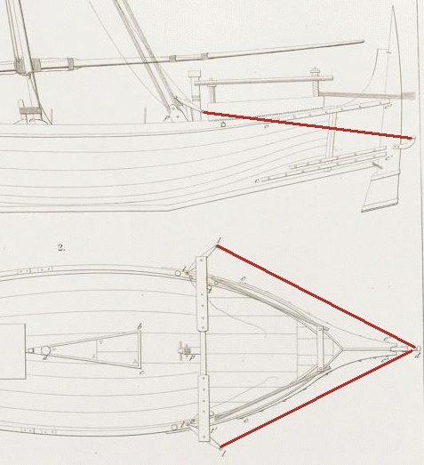
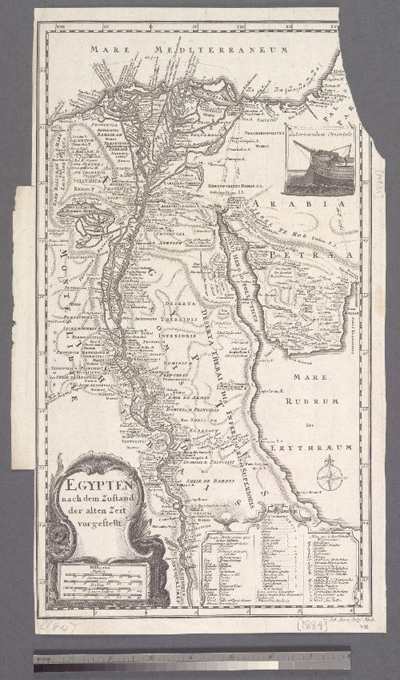
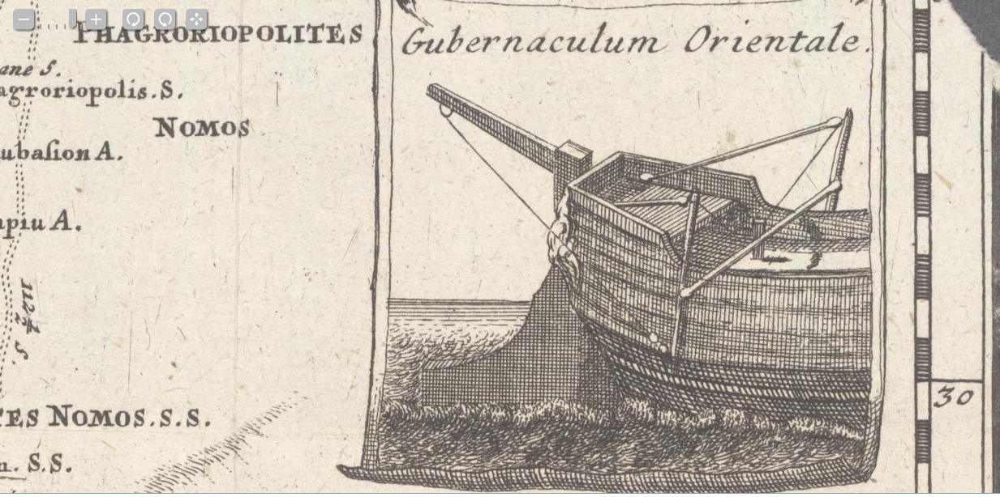
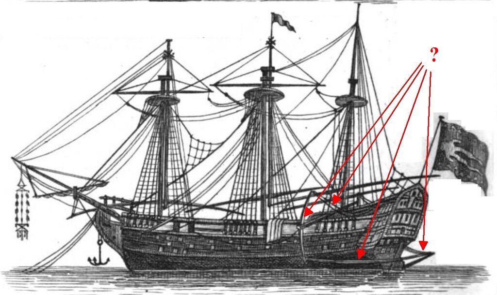

Gubernaculum orientale
Но даль пустынна и спокойна ―
И я всё тот же ― у руля...
А. А. Блок. Оставь меня в моей дали... (1905)
На изображении корабля с паломниками-мусульманами, приведенном ранее, использована одна из разновидностей рулевого привода, который имел достаточно широкое распространение в бассейне Индийского океана, особенно у арабов. Простейший вид такого привода мы встречаем в замечательном труде французского адмирала Франсуа-Эдмона Пари (François-Edmond Pâris, 1806-1893) Essai sur la construction navale des peuples extra-européens, Paris, 1841.
Для большего удобства приведем увеличенное изображение этого привода на одном из судов

Схема этого привода, как видим, совсем проста. Вместо рычага (румпеля), который крепился к верхней части баллера руля, здесь используется кронштейн, который крепили непосредственно к перу руля в районе ватерлинии. К кронштейну с обоих бортов шли тросы (выделены красным цветом), которые крепились к одному концу двухплечего рычага; трос, прикрепленный к другому концу, заканчивался в руке у рулевого.
Ясно, что для больших кораблей такая схема требовала усовершенствования, в ней появились дополнительные рычаги и тали. Хотя принцип оставался прежним. Этот экзотический рулевой привод, как и любую другую экзотику, европейцы назвали «восточным» – восточный руль, Gubernaculum orientale. Мы видим его, например, на врезке в карту Египта на немецком языке

Карта Египта, картограф Себастьян Дорн, вторая половина XVIII века.
Посмотрим на изображение в увеличенном виде

Практически то же самое мы имеем на нашем корабле-загадке. Схема привода здесь усложнена, но принцип остается прежним.

Правда, кронштейна, который крепился к перу руля, здесь нет, штур-трос крепится к румпелю, закрепленному на пере руля. В отличие от классического руля, румпель здесь направлен не внутрь корпуса судна, а в противоположном направлении. От румпеля трос идет к одному из концов двухплечего рычага, центр которого закреплен на прочной балке, выступающей за корпус судна в районе бизань-мачты. От другого конца упомянутого рычага трос поступает на пост рулевого. Натягивая правый или левый трос, рулевой поворачивает руль в соответствующем направлении.
При всей распространенности такого типа рулевого привода на арабских судах он оставался характерным лишь для небольших кораблей, и наличие его на трехмачтовом паруснике может вызвать удивление. Все компетентные авторы, которые писали о таком способе управления кораблем, ограничивались обычно небольшими судами. Так, Огюстен Жаль пишет о восточном руле в статье своего морского словаря, посвященной одной из разновидностей арабских доу – dungiyah, упоминая, что он встречается также на других небольших судах bateele и badane . Упоминает о таком руле и известный путешественник Ричард Покок (Richard Pococke, A Description of the East, and Some Other Countries). Может быть, если появится время, мы разберем все эти описания и углубимся в эту тему. Но не сейчас, конечно, когда народ требует продолжения банкета.
И все же мы не можем оставить в стороне вопрос: почему арабы на достаточно крупном корабле использовали такой экзотический рулевой привод? Этому могут быть два объяснения. Во-первых, заказчик корабля желал избежать неприятностей, связанных с непривычным для арабов европейским рулевым приводом и решился на использование традиционной систему управления. Во-вторых, тот же заказчик стремился получить как можно больше помещений «первого класса» для богатых паломников, поэтому потребовал, чтобы румпель не занимал место в кормовой надстройке. Направив румпель вовне, строителю не оставалось иного выбора, кроме как установить Gubernaculum orientale.